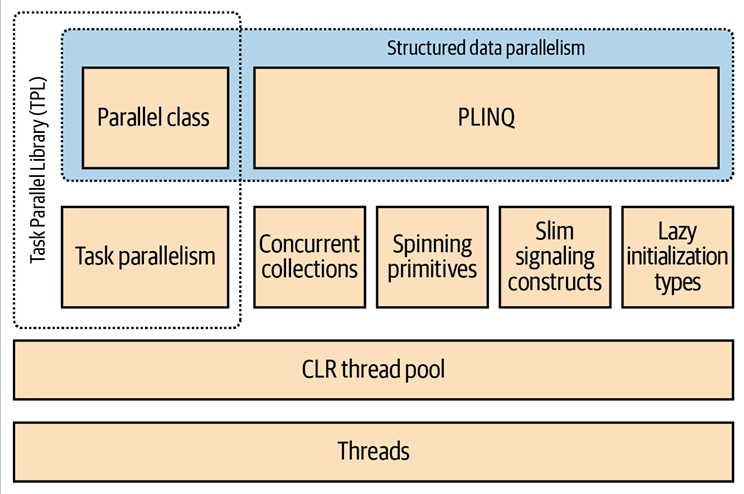
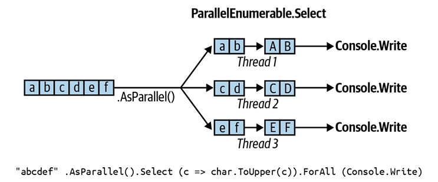
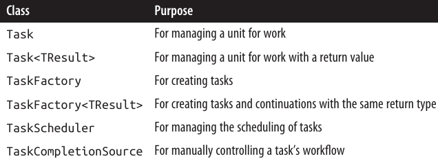
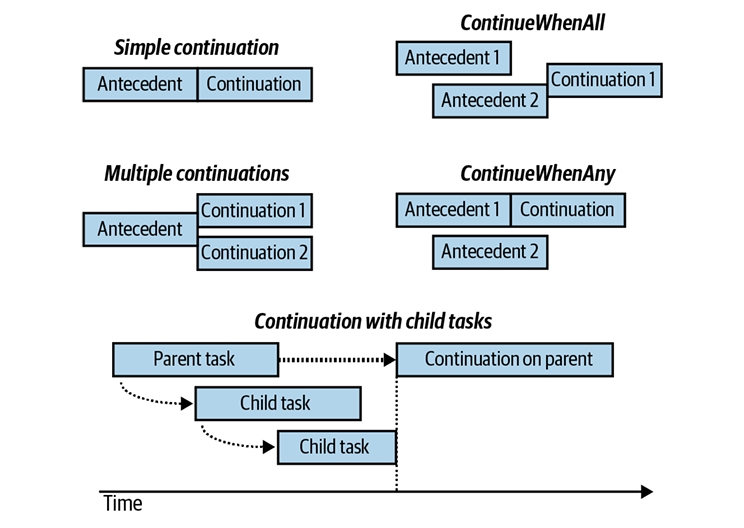
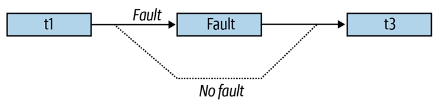

فصل بیست و دوم: برنامهنویسی موازی (Parallel Programming)
در این فصل، ما به APIها و ساختارهای چندنخی (multithreading) میپردازیم که با هدف بهرهبرداری از پردازندههای چندهستهای طراحی شدهاند:
- Parallel LINQ (PLINQ)
- کلاس Parallel
- ساختارهای task parallelism
- مجموعههای concurrent
این ساختارها در مجموع (بهصورت غیررسمی) با عنوان Parallel Framework (PFX) شناخته میشوند. کلاس Parallel همراه با ساختارهای task parallelism تحت عنوان Task Parallel Library (TPL) نامیده میشوند.
پیش از مطالعهی این فصل، لازم است با مفاهیم پایهای در فصل ۱۴ آشنا باشید—بهویژه locking، ایمنی نخها (thread safety) و کلاس Task.
🔧 علاوه بر اینها، .NET مجموعهای از APIهای تخصصی دیگر را برای کمک به برنامهنویسی موازی و ناهمگام ارائه میدهد:
- System.Threading.Channels.Channel → یک صف تولیدکننده/مصرفکننده ناهمگام با کارایی بالا، که در .NET Core 3 معرفی شد.
- Microsoft Dataflow (در فضای نام System.Threading.Tasks.Dataflow) → یک API پیشرفته برای ایجاد شبکهای از بلوکهای بافر شده (buffered blocks) که عملیات یا تبدیل دادهها را بهصورت موازی اجرا میکنند و شباهت زیادی به برنامهنویسی actor/agent دارند.
- Reactive Extensions → پیادهسازی LINQ روی IObservable (جایگزینی برای IAsyncEnumerable) که در ترکیب جریانهای ناهمگام بسیار قدرتمند است. این قابلیت از طریق بستهی System.Reactive NuGet عرضه میشود.
چرا PFX؟ 🤔
در ۱۵ سال گذشته، سازندگان CPU از پردازندههای تکهستهای به چندهستهای مهاجرت کردهاند. این موضوع برای ما برنامهنویسان مشکلساز است، زیرا کدهای تکنخی بهطور خودکار از هستههای بیشتر سریعتر اجرا نمیشوند.
استفاده از چندهسته در بسیاری از برنامههای سمت سرور ساده است، چون هر نخ میتواند یک درخواست مشتری جداگانه را بهطور مستقل پردازش کند. اما روی دسکتاپ این موضوع دشوارتر است، چون معمولاً نیاز دارید کدی را که محاسبات سنگین دارد به این صورت تغییر دهید:
- تقسیم آن به قطعههای کوچکتر.
- اجرای این قطعهها بهصورت موازی با چندنخی.
- جمعآوری نتایج در زمانی که آماده میشوند، به شکلی ایمن از نظر نخها و کارا.
البته انجام همهی این مراحل با ساختارهای کلاسیک چندنخی ممکن است، اما دستوپاگیر است—بهخصوص مراحل تقسیمبندی و جمعآوری نتایج. مشکل دیگر این است که استراتژی رایج locking برای ایمنی نخها، هنگام کار همزمان چند نخ روی دادههای مشترک، باعث ایجاد رقابت (contention) زیادی میشود.
کتابخانههای PFX دقیقاً برای حل این سناریوها طراحی شدهاند.
مفاهیم PFX 🧩
برنامهنویسی برای بهرهبرداری از چندهسته یا چند پردازنده، parallel programming نام دارد. این موضوع یک زیرمجموعه از مفهوم گستردهتر multithreading است.
دو استراتژی اصلی برای تقسیم کار بین نخها وجود دارد:
- Data Parallelism (موازیسازی دادهها)
- Task Parallelism (موازیسازی وظایف)
🔹 در data parallelism، وقتی مجموعهای از وظایف باید روی دادههای زیادی اجرا شوند، هر نخ همان مجموعه وظایف را روی بخشی از دادهها اجرا میکند. در واقع دادهها بین نخها تقسیم میشوند.
🔹 در task parallelism، ما وظایف را تقسیم میکنیم؛ به این معنا که هر نخ وظیفهای متفاوت را اجرا میکند.
بهطور کلی، data parallelism سادهتر است و روی سختافزارهایی با قابلیت موازیسازی بالا بهتر مقیاسپذیر است، زیرا دادههای مشترک را کاهش میدهد یا حذف میکند (در نتیجه مشکلات رقابت و ایمنی نخها نیز کمتر میشود). علاوهبر این، معمولاً دادهها بیش از وظایف جداگانه هستند، و این امر پتانسیل موازیسازی را افزایش میدهد.
Data parallelism همچنین زمینهساز structured parallelism است؛ به این معنا که کارهای موازی در یک نقطه از برنامه شروع و در همانجا نیز پایان مییابند. در مقابل، task parallelism معمولاً unstructured است، یعنی کارهای موازی ممکن است در بخشهای پراکندهای از برنامه شروع و پایان یابند.
🔑 Structured parallelism سادهتر، کمخطاتر، و امکان واگذاری کارهای دشوار مانند تقسیمبندی، هماهنگی نخها و حتی جمعآوری نتایج را به کتابخانهها فراهم میکند.
اجزای PFX 🏗️
کتابخانهی PFX از دو لایهی اصلی تشکیل شده است (مطابق شکل 22-1):
-
لایه بالاتر → شامل دو API برای data parallelism ساختاریافته:
- PLINQ
- کلاس Parallel
-
لایه پایینتر → شامل کلاسهای task parallelism بهعلاوه مجموعهای از ساختارهای کمکی برای فعالیتهای برنامهنویسی موازی.

PLINQ ✨
PLINQ غنیترین قابلیتها را ارائه میدهد: این ابزار تمام مراحل موازیسازی را بهطور خودکار انجام میدهد—از جمله:
- تقسیم کار به وظایف (tasks)
- اجرای این وظایف روی نخها (threads)
- جمعآوری نتایج در یک توالی خروجی واحد
به همین دلیل آن را Declarative مینامند—چون شما فقط اعلام میکنید که میخواهید کارتان موازیسازی شود (بهصورت یک پرسوجوی LINQ ساختاربندیشده) و خودِ runtime جزئیات پیادهسازی را مدیریت میکند.
در مقابل، رویکردهای دیگر Imperative هستند؛ یعنی شما باید بهطور صریح کدی بنویسید تا کار را تقسیم یا نتایج را جمعآوری کنید.
همانطور که خلاصهی زیر نشان میدهد:
- در مورد کلاس Parallel → شما باید نتایج را خودتان جمعآوری کنید.
- در مورد ساختارهای task parallelism → شما باید علاوه بر جمعآوری نتایج، تقسیم کار را نیز خودتان انجام دهید.

مجموعههای Concurrent و Spinning Primitives ⚙️
مجموعههای concurrent و spinning primitives به شما در فعالیتهای سطح پایینتر برنامهنویسی موازی کمک میکنند. اهمیت این ابزارها از آنجاست که PFX نهتنها برای سختافزار امروزی بلکه برای نسلهای آیندهی پردازندهها با تعداد هستههای بسیار بیشتر طراحی شده است.
فرض کنید باید یک توده چوب خردشده را جابهجا کنید و ۳۲ کارگر در اختیار دارید؛ بزرگترین چالش این است که کارگران بدون مزاحمت برای یکدیگر بتوانند کار کنند. دقیقا همین موضوع در تقسیم یک الگوریتم بین ۳۲ هسته رخ میدهد: اگر از lockهای معمولی برای محافظت از منابع مشترک استفاده شود، قفل شدنها (blocking) باعث میشوند تنها بخشی از هستهها واقعاً فعال باشند.
🔑 مجموعههای concurrent بهطور خاص برای دسترسیهای بسیار همزمان تنظیم شدهاند، با تمرکز بر حداقلسازی یا حذف قفل شدن. کلاس Parallel و همچنین PLINQ خودشان برای مدیریت کار بهصورت کارآمد، متکی بر همین مجموعهها و spinning primitives هستند.
کاربردهای دیگر PFX 🛠️
ساختارهای برنامهنویسی موازی تنها برای استفاده از چندهسته نیستند، بلکه در سناریوهای دیگر هم مفید واقع میشوند:
- وقتی به یک queue، stack یا dictionary ایمن از نظر نخها (thread-safe) نیاز دارید.
- BlockingCollection راهی ساده برای پیادهسازی ساختارهای تولیدکننده/مصرفکننده فراهم میکند و همچنین روشی مناسب برای محدودسازی همزمانی است.
- Tasks پایهی اصلی برنامهنویسی ناهمگام هستند (همانطور که در فصل ۱۴ دیدیم).
چه زمانی باید از PFX استفاده کرد؟ ⏱️
مورد اصلی استفاده از PFX، برنامهنویسی موازی است: یعنی بهرهبرداری از چندهسته برای سرعتبخشیدن به کدهای محاسباتی سنگین.
یکی از چالشهای مهم در برنامهنویسی موازی، قانون Amdahl است. این قانون میگوید بیشترین بهبود کارایی از موازیسازی، توسط بخشی از کد که باید بهصورت ترتیبی (sequential) اجرا شود محدود میگردد.
📌 مثال: اگر تنها دوسوم زمان اجرای یک الگوریتم قابل موازیسازی باشد، حتی با بینهایت هسته نمیتوانید بیش از سه برابر افزایش کارایی داشته باشید.
بنابراین، پیش از ادامه باید مطمئن شوید که گلوگاه واقعاً در بخشی از کد است که قابلیت موازیسازی دارد. همچنین باید بررسی کنید که آیا اصلاً کد شما نیاز به محاسبات سنگین دارد یا خیر—زیرا بهینهسازی اغلب سادهترین و مؤثرترین راهکار است. البته این موضوع یک معامله دارد، چون برخی روشهای بهینهسازی میتوانند موازیسازی کد را سختتر کنند.
بیشترین سود در مواردی بهدست میآید که به آنها embarrassingly parallel problems میگویند—یعنی زمانی که یک کار بهراحتی میتواند به وظایف جداگانه تقسیم شود و هرکدام بهطور مستقل و کارآمد اجرا شوند.
📷 نمونهها:
- بسیاری از وظایف پردازش تصویر
- ray tracing
- روشهای brute-force در ریاضیات یا رمزنگاری
نمونهی یک مشکل غیر embarrassingly parallel، پیادهسازی یک نسخهی بهینه از الگوریتم quicksort است—که برای رسیدن به نتیجه خوب نیازمند فکر بیشتری است و شاید به unstructured parallelism نیاز داشته باشد.
PLINQ ⚡
PLINQ پرسوجوهای LINQ محلی را بهطور خودکار موازیسازی میکند. مزیت بزرگ آن این است که بار تقسیم کار و جمعآوری نتایج را بهطور کامل به .NET واگذار میکند.
برای استفاده از PLINQ، کافیست روی توالی ورودی، متد AsParallel() را فراخوانی کرده و سپس پرسوجوی LINQ را مثل همیشه ادامه دهید.
نمونهی زیر عددهای اول بین ۳ تا ۱۰۰,۰۰۰ را با استفاده کامل از تمام هستههای ماشین محاسبه میکند:
// محاسبه اعداد اول با یک الگوریتم ساده (غیربهینه).
IEnumerable<int> numbers = Enumerable.Range (3, 100000 - 3);
var parallelQuery =
from n in numbers.AsParallel()
where Enumerable.Range (2, (int) Math.Sqrt(n)).All (i => n % i > 0)
select n;
int[] primes = parallelQuery.ToArray();
🔍 متد AsParallel یک extension method در System.Linq.ParallelEnumerable است. این متد ورودی را در یک توالی بر پایهی ParallelQuery
این متدها پیادهسازیهای موازی از هر یک از عملگرهای استاندارد پرسوجو را فراهم میکنند. اساس کار آنها این است که توالی ورودی را به بخشهایی تقسیم میکنند تا روی نخهای مختلف اجرا شوند و سپس نتایج را دوباره در یک توالی خروجی واحد گردآوری کنند (مطابق شکل 22-2).

استفاده از AsSequential() 🔄
فراخوانی AsSequential() باعث میشود که یک توالی ParallelQuery باز (unwrap) شود، بهطوریکه عملگرهای پرسوجو (query operators) بعدی به عملگرهای استاندارد LINQ متصل شده و بهصورت ترتیبی (sequential) اجرا شوند.
این موضوع زمانی ضروری است که:
- بخواهید متدی را فراخوانی کنید که دارای اثر جانبی (side effect) باشد.
- یا متد مورد نظر thread-safe نباشد.
برای عملگرهای پرسوجویی که دو توالی ورودی دریافت میکنند (مثل Join, GroupJoin, Concat, Union, Intersect, Except و Zip) باید روی هر دو توالی ورودی، متد AsParallel() اعمال شود؛ در غیر این صورت خطا (exception) پرتاب خواهد شد.
نکته: نیازی نیست در طول پیشرفت یک پرسوجو مدام AsParallel() را اعمال کنید، زیرا عملگرهای پرسوجوی PLINQ خودشان یک ParallelQuery دیگر برمیگردانند. در واقع، فراخوانی دوبارهی AsParallel ناکارآمد است، چون باعث ادغام (merge) و تقسیمبندی مجدد پرسوجو میشود:
mySequence.AsParallel() // توالی را به ParallelQuery<int> میپیچد
.Where (n => n > 100) // یک ParallelQuery<int> دیگر تولید میکند
.AsParallel() // غیرضروری و ناکارآمد!
.Select (n => n * n);
محدودیتها و نکات PLINQ ⚠️
- همهی عملگرهای پرسوجو بهطور مؤثر قابل موازیسازی نیستند. برای این موارد (بخش “PLINQ Limitations” در صفحه ۹۳۸)، PLINQ عملگر را بهصورت ترتیبی اجرا میکند.
- اگر PLINQ تشخیص دهد سربار موازیسازی بیشتر از سود آن است، پرسوجو را بهصورت ترتیبی اجرا خواهد کرد.
- PLINQ فقط روی مجموعههای محلی کار میکند؛ مثلاً با Entity Framework سازگار نیست، چون در آن حالت LINQ به SQL ترجمه میشود و روی سرور پایگاه داده اجرا خواهد شد. با این حال میتوانید PLINQ را برای پرسوجوهای محلی روی نتایج حاصل از دیتابیس بهکار ببرید.
- اگر یک پرسوجوی PLINQ استثنا پرتاب کند، این خطا بهشکل AggregateException دوباره پرتاب میشود، که خاصیت InnerExceptions آن خطا یا خطاهای واقعی را در خود نگه میدارد (برای جزئیات، به “Working with AggregateException” در صفحه ۹۶۴ مراجعه کنید).
چرا AsParallel بهصورت پیشفرض فعال نیست؟ 🤔
با توجه به اینکه AsParallel پرسوجوهای LINQ را بهطور شفاف موازیسازی میکند، این پرسش پیش میآید: چرا مایکروسافت عملگرهای استاندارد LINQ را بهطور پیشفرض موازی نکرد و PLINQ را به حالت پیشفرض تبدیل نکرد؟
دلایل این رویکرد opt-in عبارتند از:
-
برای اینکه PLINQ مفید باشد، باید حجم قابلتوجهی از کار محاسباتی سنگین وجود داشته باشد. اکثر پرسوجوهای LINQ-to-Objects خیلی سریع اجرا میشوند؛ در این حالت نهتنها موازیسازی غیرضروری است، بلکه سربار تقسیمبندی، جمعآوری و هماهنگی نخهای اضافی میتواند اجرای کد را کندتر کند.
-
تفاوتهای رفتاری:
- خروجی یک پرسوجوی PLINQ (بهطور پیشفرض) میتواند از نظر ترتیب عناصر با LINQ عادی متفاوت باشد (بخش “PLINQ and Ordering” در صفحه ۹۳۷).
- PLINQ استثناها را درون یک AggregateException میپیچد (چون ممکن است چند استثنا بهطور همزمان رخ دهند).
- اگر پرسوجو متدهای غیر thread-safe را فراخوانی کند، نتایج PLINQ قابلاعتماد نخواهند بود.
-
PLINQ قابلیتهای متعددی برای تنظیم و بهینهسازی دارد. افزودن این پیچیدگیها به API استاندارد LINQ-to-Objects باعث شلوغی و حواسپرتی میشد.
رفتار اجرایی موازی (Parallel Execution Ballistics) 🎯
مانند پرسوجوهای عادی LINQ، پرسوجوهای PLINQ نیز lazy evaluation دارند. یعنی اجرا فقط زمانی آغاز میشود که شروع به مصرف نتایج کنید—معمولاً با یک حلقهی foreach (یا با یک عملگر تبدیلی مثل ToArray یا عملگری که یک عنصر/مقدار منفرد برمیگرداند).
اما هنگام شمارش نتایج، نحوهی اجرا با پرسوجوهای ترتیبی معمولی متفاوت است:
- در پرسوجوی ترتیبی، همهچیز کاملاً توسط مصرفکننده و بهصورت pull انجام میشود؛ یعنی هر عنصر دقیقاً زمانی واکشی میشود که مصرفکننده به آن نیاز دارد.
- در پرسوجوی موازی، نخهای مستقل عناصر ورودی را کمی زودتر از زمان نیاز مصرفکننده واکشی میکنند (مثل تلهپرومتر برای مجریان اخبار 📺). سپس این عناصر در طول زنجیرهی پرسوجو بهصورت موازی پردازش میشوند. نتایج در یک بافر کوچک نگهداری میشوند تا در لحظه برای مصرفکننده آماده باشند.
- اگر مصرفکننده مکث کند یا زودتر از شمارش کامل خارج شود، پردازشگر پرسوجو هم متوقف یا مکث میکند تا از هدر رفتن CPU و حافظه جلوگیری شود.
تنظیم بافر در PLINQ 📦
میتوانید رفتار بافر PLINQ را با فراخوانی WithMergeOptions بعد از AsParallel تغییر دهید:
- AutoBuffered (پیشفرض) → معمولاً بهترین کارایی کلی را میدهد.
- NotBuffered → بافر را غیرفعال میکند و برای مواقعی مناسب است که میخواهید نتایج را سریعتر و بلافاصله ببینید.
- FullyBuffered → کل مجموعه نتایج را قبل از ارائه به مصرفکننده ذخیره میکند (عملگرهایی مانند OrderBy و Reverse و همچنین عملگرهای مربوط به element، aggregation و conversion ذاتاً همینگونه عمل میکنند).
📌 PLINQ و ترتیب (Ordering)
یکی از عوارض جانبی موازیسازی عملگرهای پرسوجو این است که هنگام جمعآوری نتایج، لزومی ندارد ترتیب عناصر مثل حالت اولیه باقی بماند (به شکل 22-2 مراجعه کنید). به بیان دیگر، تضمین حفظ ترتیب در LINQ برای توالیها در PLINQ برقرار نیست.
اگر به حفظ ترتیب نیاز داشته باشید، میتوانید پس از AsParallel() از AsOrdered() استفاده کنید:
myCollection.AsParallel().AsOrdered()...
استفاده از AsOrdered هنگام کار با مجموعههای بزرگ باعث کاهش کارایی میشود، چون PLINQ باید موقعیت اصلی هر عنصر را دنبال کند.
میتوانید اثر AsOrdered را در ادامهی پرسوجو با استفاده از AsUnordered خنثی کنید. این کار یک “نقطهی تصادفی در ترتیب” ایجاد میکند که به پرسوجو اجازه میدهد از آن نقطه به بعد کارایی بهتری داشته باشد.
برای مثال، اگر بخواهید ترتیب ورودی فقط برای دو عملگر اول حفظ شود:
inputSequence.AsParallel().AsOrdered()
.QueryOperator1()
.QueryOperator2()
.AsUnordered()
// از اینجا به بعد ترتیب اهمیتی ندارد
.QueryOperator3()
...
🔹 دلیل اینکه AsOrdered پیشفرض نیست این است که در بیشتر پرسوجوها، ترتیب اولیه اهمیتی ندارد. اگر قرار بود AsOrdered پیشفرض باشد، برای اکثر پرسوجوهای موازی باید AsUnordered اضافه میکردید تا بهترین کارایی حاصل شود، و این باعث پیچیدگی و بار اضافی میشد.
⚠️ محدودیتهای PLINQ
همهی عملگرهای پرسوجو را نمیتوان بهطور مؤثر موازیسازی کرد. موارد زیر محدودیت دارند:
-
نسخههای اندیسدار
Select،SelectManyوElementAtفقط زمانی موازیسازی میشوند که عناصر منبع در موقعیت اندیسی اصلی خود باقی مانده باشند.بیشتر عملگرها موقعیت اندیس را تغییر میدهند (مثل
Whereکه عناصر را حذف میکند). بنابراین اگر میخواهید از عملگرهای اندیسدار استفاده کنید، معمولاً باید آنها در ابتدای پرسوجو باشند. -
عملگرهای زیر قابل موازیسازی هستند، اما از استراتژی تقسیمبندی پرهزینهای استفاده میکنند که گاهی حتی از پردازش ترتیبی کندتر است:
Join,GroupBy,GroupJoin,Distinct,Union,Intersect,Except -
نسخههای Seeded از عملگر
Aggregateدر حالت عادی قابل موازیسازی نیستند. PLINQ برای این مورد نسخههای خاصی ارائه میدهد (بخش Optimizing PLINQ در صفحه 942). -
همهی عملگرهای دیگر موازیسازی میشوند، اما این تضمین نمیکند که پرسوجوی شما حتماً موازی شود. اگر PLINQ تشخیص دهد سربار موازیسازی پرسوجو را کند میکند، ممکن است آن را ترتیبی اجرا کند. ✅ میتوانید با این کد رفتار را مجبور به موازیسازی کنید:
.WithExecutionMode(ParallelExecutionMode.ForceParallelism)
📝 مثال: بررسی املا (Spellchecker) موازی
فرض کنید میخواهیم یک بررسیکنندهی املای سریع برای اسناد بزرگ بنویسیم که از تمام هستههای CPU استفاده کند. با تبدیل الگوریتم به یک پرسوجوی LINQ، میتوانیم بهراحتی آن را موازی کنیم.
🔹 مرحلهی اول: دانلود یک دیکشنری از کلمات انگلیسی و ذخیره در HashSet برای جستوجوی سریع:
if (!File.Exists("WordLookup.txt")) // حدود 150,000 کلمه
File.WriteAllText("WordLookup.txt",
await new HttpClient().GetStringAsync(
"http://www.albahari.com/ispell/allwords.txt"));
var wordLookup = new HashSet<string>(
File.ReadAllLines("WordLookup.txt"),
StringComparer.InvariantCultureIgnoreCase);
🔹 مرحلهی دوم: ایجاد یک “سند آزمایشی” شامل یک میلیون کلمهی تصادفی، سپس ایجاد چند غلط املایی عمدی:
var random = new Random();
string[] wordList = wordLookup.ToArray();
string[] wordsToTest = Enumerable.Range(0, 1000000)
.Select(i => wordList[random.Next(0, wordList.Length)])
.ToArray();
wordsToTest[12345] = "woozsh"; // چند غلط املایی
wordsToTest[23456] = "wubsie";
🔹 مرحلهی سوم: اجرای بررسی موازی با PLINQ:
var query = wordsToTest
.AsParallel()
.Select((word, index) => (word, index))
.Where(iword => !wordLookup.Contains(iword.word))
.OrderBy(iword => iword.index);
foreach (var mistake in query)
Console.WriteLine(mistake.word + " - index = " + mistake.index);
// خروجی:
// woozsh - index = 12345
// wubsie - index = 23456
متد wordLookup.Contains در predicate به پرسوجو حجم پردازشی مناسبی میدهد و ارزش موازیسازی را ایجاد میکند.
📦 نکته دربارهی کارایی و حافظه
در پرسوجو از Tupleها (word, index) بهجای نوع ناشناس (anonymous types) استفاده شده است.
چون Tupleها بهصورت Value Type پیادهسازی شدهاند (نه Reference Type):
- مصرف حافظه در اوج کاهش مییابد ✅
- کارایی بهتر میشود ✅
- تخصیصهای heap و جمعآوری زباله (Garbage Collection) کمتر میشود ✅
📊 البته بنچمارکها نشان میدهند این مزایا در عمل متوسط هستند، چون مدیر حافظه بسیار کارآمد است و این تخصیصها معمولاً بیش از Generation 0 دوام نمیآورند.
🧵 استفاده از ThreadLocal<T>
بیایید مثال خودمان را گسترش دهیم و ایجاد لیست تصادفی کلمات آزمایشی را نیز موازیسازی کنیم. ما آن را بهصورت یک پرسوجوی LINQ ساختاربندی کردیم، پس باید ساده باشد.
🔹 نسخهی ترتیبی:
string[] wordsToTest = Enumerable.Range(0, 1000000)
.Select(i => wordList[random.Next(0, wordList.Length)])
.ToArray();
اما مشکل اینجاست که فراخوانی random.Next Thread-Safe نیست؛ بنابراین بهسادگی نمیتوانیم AsParallel() را در پرسوجو وارد کنیم.
راهحل احتمالی این است که متدی بنویسیم که دور random.Next قفل بگذارد؛ اما این باعث محدود شدن همزمانی (Concurrency) میشود.
✅ راهحل بهتر این است که از ThreadLocal<Random> (بخش Thread-Local Storage صفحه 923) استفاده کنیم تا برای هر نخ یک شیء Random جداگانه ساخته شود.
🔹 نسخهی موازی:
var localRandom = new ThreadLocal<Random>(
() => new Random(Guid.NewGuid().GetHashCode()));
string[] wordsToTest = Enumerable.Range(0, 1000000).AsParallel()
.Select(i => wordList[localRandom.Value.Next(0, wordList.Length)])
.ToArray();
در تابع کارخانهای که برای ایجاد یک شیء Random نوشتیم، از هش (HashCode) یک Guid استفاده کردیم تا مطمئن شویم اگر دو شیء Random در یک بازهی زمانی کوتاه ساخته شوند، دنبالهی اعداد تصادفیشان متفاوت خواهد بود. 🎲
🤔 چه زمانی از PLINQ استفاده کنیم؟
ممکن است وسوسه شوید در برنامههای موجود خود بهدنبال پرسوجوهای LINQ بگردید و آنها را موازیسازی کنید. اما این معمولاً بیفایده است، چون مسائلی که LINQ بهترین راهحل برایشان محسوب میشود، خیلی سریع اجرا میشوند و موازیسازی کمکی نمیکند.
✅ رویکرد بهتر:
- پیدا کردن یک گلوگاه CPU-محور
- سپس بررسی اینکه آیا میتوان آن را بهصورت یک پرسوجوی LINQ بیان کرد
🔹 یک اثر جانبی خوشایند این بازنویسی این است که کد کوچکتر و خواناتر میشود.
📌 PLINQ برای مسائلی که بهطور واضح Embarrassingly Parallel هستند عالی است. اما برای پردازش تصویر (Imaging) انتخاب خوبی نیست، چون جمعآوری میلیونها پیکسل در یک توالی خروجی خودش تبدیل به گلوگاه میشود. راه بهتر این است که پیکسلها را مستقیماً در یک آرایه یا بلوک حافظهی unmanaged بنویسیم و از کلاس Parallel یا task parallelism برای مدیریت چندریسمانی استفاده کنیم.
(با این حال میتوان با متد ForAll جمعآوری نتایج را حذف کرد—بخش Optimizing PLINQ صفحه 942 توضیح میدهد. این کار وقتی منطقی است که الگوریتم پردازش تصویر ذاتاً مناسب LINQ باشد.)
🧼 خلوص تابعی (Functional Purity)
چون PLINQ پرسوجوی شما را روی نخهای موازی اجرا میکند، باید مراقب باشید عملیاتی انجام ندهید که Thread-Safe نیستند.
بهویژه، نوشتن در متغیرها اثر جانبی دارد و بنابراین ناامن است:
// پرسوجوی زیر هر عنصر را در موقعیتش ضرب میکند.
// با ورودی Enumerable.Range(0,999) باید مربعها را بدهد.
int i = 0;
var query = from n in Enumerable.Range(0,999).AsParallel()
select n * i++;
حتی اگر افزایش i را با قفل ایمن کنیم، باز هم مشکل باقی میماند چون i لزوماً با موقعیت عنصر ورودی تطابق ندارد.
افزودن AsOrdered هم مشکل را حل نمیکند؛ چون فقط تضمین میکند خروجی بهترتیب عناصر پردازششده باشد، نه اینکه واقعاً پردازش ترتیبی انجام شود.
✅ راهحل درست: استفاده از نسخهی اندیسدار Select:
var query = Enumerable.Range(0,999).AsParallel()
.Select((n, i) => n * i);
🔹 برای بهترین کارایی، متدهایی که در عملگرهای پرسوجو فراخوانی میشوند باید Thread-Safe باشند؛
- یا بهدلیل نداشتن اثر جانبی (خالص بودن تابع)
- یا اگر بهوسیلهی قفل ایمن شدهاند، باید بدانید که پتانسیل موازیسازی محدود به اثرات رقابت خواهد بود.
⚙️ تنظیم درجهی موازیسازی (Degree of Parallelism)
بهطور پیشفرض، PLINQ درجهی موازیسازی بهینه برای پردازنده را انتخاب میکند.
میتوانید آن را با متد WithDegreeOfParallelism تغییر دهید:
...AsParallel().WithDegreeOfParallelism(4)...
🔹 نمونه: شاید بخواهید درجهی موازیسازی را بالاتر از تعداد هستهها افزایش دهید، وقتی کار I/O-Bound دارید (مثلاً دانلود همزمان صفحات وب). بااینحال، Task combinators و توابع Asynchronous راهحل مشابه اما کارآمدتری ارائه میدهند.
🚫 برخلاف Tasks، PLINQ نمیتواند کارهای I/O-Bound را بدون مسدود کردن نخها انجام دهد (و این بدتر باعث قفل شدن نخهای pool میشود).
📍 توجه:
WithDegreeOfParallelism را فقط یکبار میتوان در یک پرسوجوی PLINQ فراخوانی کرد.
اگر نیاز دارید دوباره صدا بزنید، باید پرسوجو را merge و دوباره partition کنید (با صدا زدن دوبارهی AsParallel).
مثال:
"The Quick Brown Fox"
.AsParallel().WithDegreeOfParallelism(2)
.Where(c => !char.IsWhiteSpace(c))
.AsParallel().WithDegreeOfParallelism(3) // Merge + Partition دوباره
.Select(c => char.ToUpper(c));
⏹ لغو (Cancellation)
لغو کردن یک پرسوجوی PLINQ که در حال مصرف نتایجش در foreach هستید ساده است:
کافی است از حلقه خارج شوید (break) و پرسوجو بهطور خودکار لغو میشود، چون enumerator بهطور ضمنی Dispose میشود.
اما اگر پرسوجو با یک عملگر تبدیل، تکعنصر یا تجمیعی خاتمه یابد، باید آن را از یک نخ دیگر با CancellationToken لغو کنید.
برای درج توکن، بعد از AsParallel از WithCancellation استفاده کنید و خاصیت Token از یک CancellationTokenSource را پاس دهید.
مثال:
IEnumerable<int> tenMillion = Enumerable.Range(3, 10_000_000);
var cancelSource = new CancellationTokenSource();
cancelSource.CancelAfter(100); // لغو بعد از 100 میلیثانیه
var primeNumberQuery =
from n in tenMillion.AsParallel().WithCancellation(cancelSource.Token)
where Enumerable.Range(2, (int)Math.Sqrt(n)).All(i => n % i > 0)
select n;
try
{
int[] primes = primeNumberQuery.ToArray();
// هرگز به این خط نمیرسیم چون نخ دیگر ما را لغو میکند
}
catch (OperationCanceledException)
{
Console.WriteLine("Query canceled");
}
🔹 هنگام لغو، PLINQ منتظر میماند هر نخ کاری روی عنصر جاریاش تمام کند، سپس پرسوجو پایان مییابد. این یعنی هر متد خارجی که پرسوجو فراخوانی کرده باشد، تا انتها اجرا خواهد شد.
بهینهسازی PLINQ 🚀
بهینهسازی در سمت خروجی
یکی از مزیتهای PLINQ این است که نتایج پردازش موازی را بهطور مرتب در یک دنبالهی خروجی واحد جمعآوری (collate) میکند. اما گاهی همهی کاری که در نهایت انجام میدهید این است که روی هر عنصر فقط یک تابع را اجرا کنید:
foreach (int n in parallelQuery)
DoSomething(n);
اگر چنین شرایطی داشته باشید—و برایتان مهم نباشد که عناصر به چه ترتیبی پردازش میشوند—میتوانید با استفاده از متد ForAll در PLINQ کارایی را بهبود بدهید ✅.
متد ForAll
متد ForAll یک delegate را روی هر عنصر خروجی یک ParallelQuery اجرا میکند. این متد مستقیماً به هستهی داخلی PLINQ وصل میشود و مراحل جمعآوری و پیمایش نتایج (collating و enumerating) را دور میزند.
🔹 مثال ساده:
"abcdef"
.AsParallel()
.Select(c => char.ToUpper(c))
.ForAll(Console.Write);
📊 شکل 22-3 این فرآیند را نشان میدهد.

بهینهسازی PLINQ 🚀
جمعآوری و پیمایش نتایج (Collating & Enumerating)
عملیات جمعآوری (collating) و پیمایش (enumerating) نتایج، ذاتاً خیلی پرهزینه نیستند. به همین دلیل، بهینهسازی با استفاده از متد ForAll بیشترین سود را زمانی به همراه دارد که:
- تعداد عناصر ورودی خیلی زیاد باشد 🔢
- و هر عنصر بهسرعت پردازش شود ⚡
بهینهسازی در سمت ورودی (Input-side Optimization)
برای اینکه دادهها را بین رشتهها (threads) تقسیم کند، PLINQ از سه استراتژی پارتیشنبندی (Partitioning Strategies) استفاده میکند:
-
Range Partitioning (پارتیشنبندی بازهای)
- برای دنبالههای عددی یا دادههای ایندکسدار مناسب است.
- ورودی به بازههای پیوسته تقسیم میشود و هر بازه به یک thread اختصاص داده میشود.
-
Chunk Partitioning (پارتیشنبندی قطعهای / تکهای)
- دادهها در قطعات (chunks) کوچک تقسیم میشوند.
- این روش باعث بالانس بهتر بین threadها میشود، مخصوصاً وقتی زمان پردازش عناصر نامتوازن باشد.
-
Hash Partitioning (پارتیشنبندی هش)
- با استفاده از یک کلید هش، عناصر به threadهای مختلف اختصاص داده میشوند.
- برای سناریوهایی که دادهها ساختار خاصی دارند مفید است.

بهینهسازی PLINQ در پارتیشنبندی ⚡
عملگرهایی که نیاز به مقایسه دارند
برای عملگرهای LINQ که نیازمند مقایسه عناصر هستند (مانند:
GroupBy، Join، GroupJoin، Intersect، Except، Union و Distinct) ✅
هیچ انتخابی وجود ندارد: PLINQ همیشه از Hash Partitioning استفاده میکند.
- در این حالت PLINQ باید از قبل hashcode همه عناصر را محاسبه کند تا اطمینان یابد عناصر با hashcode مشابه روی همان thread پردازش میشوند.
- این روش میتواند نسبتاً کند باشد.
- اگر سرعت برایتان مسئلهساز شد، تنها گزینه این است که با AsSequential موازیسازی را غیرفعال کنید.
سایر عملگرهای کوئری
برای دیگر عملگرها، شما میتوانید انتخاب کنید بین:
- Range Partitioning 🟦
- Chunk Partitioning 🟩
بهصورت پیشفرض:
- اگر دنباله ورودی ایندکسپذیر باشد (مثل آرایهها یا چیزی که
IList<T>پیادهسازی کرده)، ➝ PLINQ از Range Partitioning استفاده میکند. - در غیر این صورت، ➝ Chunk Partitioning انتخاب میشود.
مقایسه کلی 🔍
- Range Partitioning → سریعتر است برای دنبالههای طولانی که پردازش هر عنصر تقریباً یکسان زمان میبرد.
- Chunk Partitioning → در سایر مواقع معمولاً سریعتر است، بهویژه وقتی پردازش عناصر نامتوازن باشد.
اجبار به Range Partitioning
- اگر کوئری با
Enumerable.Rangeشروع میشود، آن را باParallelEnumerable.Rangeجایگزین کنید. - در غیر این صورت، کافی است روی ورودی
ToListیاToArrayصدا بزنید (البته این خودش هزینهی کارایی دارد).
📌 نکته مهم:
ParallelEnumerable.Range فقط یک شورتکات برای Enumerable.Range(...).AsParallel() نیست؛ بلکه واقعاً باعث فعال شدن Range Partitioning میشود و رفتار کوئری را تغییر میدهد.
اجبار به Chunk Partitioning
برای این کار باید دنباله ورودی را با Partitioner.Create (از فضای نام System.Collections.Concurrent) بپیچید:
int[] numbers = { 3, 4, 5, 6, 7, 8, 9 };
var parallelQuery =
Partitioner.Create(numbers, true).AsParallel()
.Where(...);
- آرگومان دوم (
true) مشخص میکند که میخواهید load balancing فعال باشد، یعنی Chunk Partitioning استفاده شود.
نحوه کار Chunk Partitioning ⚙️
-
هر thread بهطور دورهای چند عنصر (یک "chunk") را برمیدارد.
-
در ابتدا chunkها خیلی کوچک هستند (۱ یا ۲ عنصر).
-
با پیشرفت کوئری، اندازه chunkها بیشتر میشود.
-
این روش باعث میشود:
- دنبالههای کوچک بهخوبی موازی شوند ✅
- و دنبالههای بزرگ باعث رفتوبرگشت بیشازحد (round-tripping) نشوند.
-
اگر یک thread عناصر "سادهتر" بگیرد، سریعتر آزاد میشود و chunks بیشتری پردازش میکند.
-
نتیجه → همه threads مشغول و متعادل میمانند.
-
تنها مشکل → نیاز به synchronization (مثل lock اختصاصی) برای دسترسی به دنباله ورودی است که میتواند کمی overhead ایجاد کند.
نحوه کار Range Partitioning 🧮
- در Range Partitioning، ورودی از همان ابتدا بین threads تقسیم میشود.
- هر thread بخش ثابتی از داده را میگیرد → بدون نیاز به lock.
- مشکل: اگر بعضی threads عناصر "سادهتر" بگیرند و زودتر تمام کنند، بقیه هنوز در حال کار خواهند بود → و این باعث idle شدن threadها میشود.
📌 مثال: محاسبه اعداد اول با Range Partitioning ممکن است عملکرد ضعیفی داشته باشد. 📌 اما محاسبه ریشه دوم ۱۰ میلیون عدد اول (که زمان پردازش هر عنصر یکسان است) بسیار خوب عمل میکند:
ParallelEnumerable.Range(1, 10_000_000).Sum(i => Math.Sqrt(i));

بهینهسازی Aggregation در PLINQ ⚙️
ParallelEnumerable.Range
متد ParallelEnumerable.Range یک ParallelQuery<T> برمیگرداند، بنابراین نیازی به فراخوانی بعدی AsParallel نیست.
- پارتیشنبندی Range لزوماً عناصر را در بلوکهای متوالی تخصیص نمیدهد؛ ممکن است از استراتژی Striping استفاده کند.
- مثال: اگر دو worker داشته باشیم، یکی عناصر فرد و دیگری عناصر زوج را پردازش میکند.
- عملگر
TakeWhileتقریباً همیشه از این استراتژی استفاده میکند تا از پردازش اضافی عناصر در انتهای دنباله جلوگیری کند.
بهینهسازی Aggregation سفارشی
PLINQ عملگرهای استاندارد مانند Sum، Average، Min و Max را بهصورت موازی و بهینه مدیریت میکند.
اما Aggregate چالشهای خاصی دارد.
مثال ساده از Aggregate (جمع کردن یک دنباله اعداد):
int[] numbers = { 1, 2, 3 };
int sum = numbers.Aggregate(0, (total, n) => total + n); // 6
- برای aggregation بدون seed، delegate ارائهشده باید associative و commutative باشد.
- اگر این قانون رعایت نشود، PLINQ ممکن است نتایج اشتباه بدهد، زیرا چند seed از دنباله برای جمعبندی چند پارتیشن استفاده میکند.
Aggregate با seed چندگانه
-
Aggregate با seed صریح معمولاً بهصورت سریالی اجرا میشود زیرا فقط یک seed دارد.
-
PLINQ یک overload خاص ارائه میدهد که seed factory میگیرد.
- برای هر thread، این تابع یک seed محلی ایجاد میکند → accumulator محلی
- سپس مقادیر محلی با accumulator اصلی ترکیب میشوند.
-
این overload همچنین یک delegate برای تبدیل نهایی نتایج میگیرد.
چهار delegate به ترتیب:
seedFactory→ ایجاد accumulator محلیupdateAccumulatorFunc→ اضافه کردن یک عنصر به accumulator محلیcombineAccumulatorFunc→ ترکیب accumulator محلی با اصلیresultSelector→ تبدیل نهایی نتیجه
مثال ساده جمع اعداد با PLINQ:
numbers.AsParallel().Aggregate(
() => 0, // seedFactory
(localTotal, n) => localTotal + n, // updateAccumulatorFunc
(mainTot, localTot) => mainTot + localTot, // combineAccumulatorFunc
finalResult => finalResult // resultSelector
);
مثال واقعیتر: شمارش فرکانس حروف در متن
متن:
string text = "Let’s suppose this is a really long string";
var letterFrequencies = new int[26];
foreach (char c in text)
{
int index = char.ToUpper(c) - 'A';
if (index >= 0 && index < 26) letterFrequencies[index]++;
}
- برای متنهای طولانی (مثل gene sequencing) این روش میتواند زمانبر باشد.
- موازیسازی با
Parallel.ForEachنیازمند مدیریت همزمانی روی آرایه مشترک است، و قفل کردن میتواند پتانسیل موازیسازی را از بین ببرد.
PLINQ با Aggregate راهحل تمیزی ارائه میدهد:
int[] result = text.AsParallel().Aggregate(
() => new int[26], // accumulator محلی
(localFrequencies, c) => // جمعبندی در accumulator محلی
{
int index = char.ToUpper(c) - 'A';
if (index >= 0 && index < 26) localFrequencies[index]++;
return localFrequencies;
},
(mainFreq, localFreq) => // ترکیب local -> main
mainFreq.Zip(localFreq, (f1, f2) => f1 + f2).ToArray(),
finalResult => finalResult // تبدیل نهایی
);
- توجه: تابع محلی
localFrequenciesعناصر را تغییر میدهد. - این بهینهسازی امکانپذیر است چون هر accumulator محلی مختص هر thread است.
کلاس Parallel 🟢
کتابخانه PFX یک شکل پایه از Structured Parallelism ارائه میدهد که از طریق سه متد static در کلاس Parallel قابل استفاده است:
-
Parallel.Invokeاجرای یک آرایه از delegateها بهصورت موازی -
Parallel.Forمعادل موازی حلقهforدر C# -
Parallel.ForEachمعادل موازی حلقهforeachدر C#
هر سه متد تا تکمیل همهی کارها، بلاک میشوند. مشابه PLINQ، در صورت بروز exception که مدیریت نشده باشد، سایر workerها بعد از اتمام iteration فعلی متوقف میشوند و exceptionها به caller برمیگردند—که در یک
AggregateExceptionبستهبندی شدهاند.
Parallel.Invoke
Parallel.Invoke یک آرایه از delegateهای Action را موازی اجرا کرده و منتظر اتمام آنها میماند. سادهترین امضای متد:
public static void Invoke(params Action[] actions);
- مشابه PLINQ، متدهای
Parallel.*برای کارهای compute-bound بهینه شدهاند، نه I/O-bound. - مثال ساده با دانلود دو صفحه وب به صورت موازی:
Parallel.Invoke(
() => new WebClient().DownloadFile("http://www.linqpad.net", "lp.html"),
() => new WebClient().DownloadFile("http://microsoft.com", "ms.html")
);
نکته مهم:
Parallel.Invoke حتی با یک میلیون delegate هم بهصورت مؤثر کار میکند، زیرا عناصر را به batch تقسیم میکند و به چند Task اصلی اختصاص میدهد، به جای ایجاد یک Task برای هر delegate.
مسئولیت collating نتایج بر عهده شماست؛ بنابراین باید به Thread Safety توجه کنید:
var data = new List<string>();
Parallel.Invoke(
() => data.Add(new WebClient().DownloadString("http://www.foo.com")),
() => data.Add(new WebClient().DownloadString("http://www.far.com"))
);
- برای حل مشکل thread-unsafe، میتوان از locking استفاده کرد، اما این کار در آرایههای بزرگ delegate باعث bottleneck میشود.
- راه بهتر: استفاده از Thread-Safe Collections، مانند
ConcurrentBag.
همچنین Parallel.Invoke یک overload دارد که ParallelOptions میگیرد:
public static void Invoke(ParallelOptions options, params Action[] actions);
- با
ParallelOptionsمیتوان CancellationToken وارد کرد، حداکثر concurrency را محدود کرد، یا یک task scheduler سفارشی مشخص کرد.
Parallel.For و Parallel.ForEach
این متدها معادل موازی حلقههای for و foreach هستند، به این معنا که هر iteration بهصورت موازی اجرا میشود.
سادهترین امضاها:
public static ParallelLoopResult For(int fromInclusive, int toExclusive, Action<int> body);
public static ParallelLoopResult ForEach<TSource>(IEnumerable<TSource> source, Action<TSource> body);
مثال:
حلقه for معمولی:
for (int i = 0; i < 100; i++)
Foo(i);
معادل موازی:
Parallel.For(0, 100, i => Foo(i));
// یا سادهتر
Parallel.For(0, 100, Foo);
حلقه foreach معمولی:
foreach (char c in "Hello, world")
Foo(c);
معادل موازی:
Parallel.ForEach("Hello, world", Foo);
مثال عملی با رمزنگاری (System.Security.Cryptography):
var keyPairs = new string[6];
Parallel.For(0, keyPairs.Length,
i => keyPairs[i] = RSA.Create().ToXmlString(true));
- مشابه
Parallel.Invoke، میتوان تعداد زیادی work item بهParallel.ForوParallel.ForEachداد و آنها بهصورت مؤثر روی چند Task تقسیم میشوند. - همان کار را میتوان با PLINQ انجام داد:
string[] keyPairs = ParallelEnumerable.Range(0, 6)
.Select(i => RSA.Create().ToXmlString(true))
.ToArray();
حلقههای داخلی و خارجی
Parallel.ForوParallel.ForEachمعمولاً روی حلقههای خارجی بهتر عمل میکنند، زیرا chunkهای بزرگتری برای موازیسازی ارائه میدهند و overhead مدیریت کمتر میشود.- موازیسازی هر دو حلقه داخلی و خارجی معمولاً غیرضروری است.
مثال:
Parallel.For(0, 100, i =>
{
Parallel.For(0, 50, j => Foo(i, j)); // حلقه داخلی: معمولاً sequential بهتر است
});
Parallel.ForEach با اندیس و مدیریت توقف حلقه 🟢
گاهی اوقات در حلقههای موازی لازم است که اندیس iteration را بدانیم.
اندیس در حلقههای موازی
در حلقه sequential معمولی:
int i = 0;
foreach (char c in "Hello, world")
Console.WriteLine(c.ToString() + i++);
اما در محیط موازی، افزایش یک متغیر مشترک thread-safe نیست.
راه حل: استفاده از overload ای از Parallel.ForEach که اندیس loop را ارائه میدهد:
public static ParallelLoopResult ForEach<TSource>(
IEnumerable<TSource> source, Action<TSource, ParallelLoopState, long> body)
- پارامتر سوم از نوع
longاندیس هر عنصر را نشان میدهد. - مثال:
Parallel.ForEach("Hello, world", (c, state, i) =>
{
Console.WriteLine(c.ToString() + i);
});
مثال عملی: Spellchecker موازی
var wordLookup = new HashSet<string>(
File.ReadAllLines("WordLookup.txt"),
StringComparer.InvariantCultureIgnoreCase
);
var random = new Random();
string[] wordList = wordLookup.ToArray();
string[] wordsToTest = Enumerable.Range(0, 1000000)
.Select(i => wordList[random.Next(0, wordList.Length)])
.ToArray();
wordsToTest[12345] = "woozsh";
wordsToTest[23456] = "wubsie";
var misspellings = new ConcurrentBag<Tuple<int,string>>();
Parallel.ForEach(wordsToTest, (word, state, i) =>
{
if (!wordLookup.Contains(word))
misspellings.Add(Tuple.Create((int)i, word));
});
نکته: باید نتایج را در یک collection ایمن برای Thread جمعآوری کنید. مزیت استفاده از indexed
ForEachنسبت به PLINQ: اجرای مستقیم بدون اعمال Select با اندیس که کارایی بیشتری دارد.
ParallelLoopState: توقف زودهنگام حلقه
در حلقه موازی نمیتوان از break معمولی استفاده کرد.
باید از متدهای Break() یا Stop() در شی ParallelLoopState استفاده کنید.
Parallel.ForEach("Hello, world", (c, loopState) =>
{
if (c == ',')
loopState.Break(); // پایان حلقه بعد از iteration جاری
else
Console.Write(c);
});
تفاوت Break و Stop:
Break()→ حلقه بعد از iteration فعلی پایان مییابد، حداقل عناصر قبل از توقف اجرا میشوند.Stop()→ حلقه بلافاصله برای تمام threadها پایان مییابد، ممکن است تنها زیرمجموعهای از عناصر پردازش شوند.
ParallelLoopResult
متدهای Parallel.For و Parallel.ForEach یک ParallelLoopResult بازمیگردانند:
IsCompleted→ آیا حلقه تا انتها اجرا شده؟LowestBreakIteration→ اندیس iteration که حلقه باBreak()پایان یافته است (اگرStop()باشد، null برمیگرداند).
مدیریت طول حلقه و توقف جزئی
- اگر بدنه حلقه طولانی است، میتوان در نقاط مختلف کد، poll روی
ShouldExitCurrentIterationانجام داد. - این property بلافاصله بعد از
Stop()یا کمی بعد ازBreak()درست میشود. - همچنین بعد از درخواست cancellation یا رخداد exception در حلقه،
ShouldExitCurrentIterationبرابر true میشود. IsExceptional→ اطلاع از بروز exception در سایر threadها.
نکته: هر exception مدیریت نشده باعث توقف حلقه بعد از iteration جاری هر thread میشود؛ برای جلوگیری از این کار، باید exceptionها را مدیریت کنید.
بهینهسازی با مقادیر محلی در Parallel.For / Parallel.ForEach 🟢
گاهی حلقههای موازی نیاز به جمعآوری دادهها در حین iteration دارند، مخصوصاً وقتی تعداد تکرارها زیاد است.
مشکل نمونه: جمع زدن ریشه دوم ۱۰ میلیون عدد
object locker = new object();
double total = 0;
Parallel.For(1, 10000000, i =>
{
lock (locker)
total += Math.Sqrt(i);
});
- هر iteration نیاز به lock دارد.
- ۱۰ میلیون lock باعث افت شدید کارایی میشود.
تشبیه: فرض کنید ۱۰ نفر زباله جمع میکنند و همه یک سطل مشترک دارند؛ زمان تلف شده برای صفبندی و contention بسیار زیاد است.
راه حل: Local Value (مقدار محلی)
- هر thread یک مقدار محلی دارد (مثل سطل زباله خصوصی).
- در پایان iterationها، مقادیر محلی به مقدار اصلی اضافه میشوند.
object locker = new object();
double grandTotal = 0;
Parallel.For(
1, 10000000,
() => 0.0, // مقدار محلی جدید برای هر thread
(i, state, localTotal) => localTotal + Math.Sqrt(i), // بدنه حلقه: جمع به local
localTotal => { lock (locker) grandTotal += localTotal; } // جمع local به مقدار اصلی
);
- تنها lock با مقدار محلی انجام میشود، نه برای هر iteration.
- کارایی بسیار بهتر از نسخه قبل.
نکته
- PLINQ اغلب جایگزین مناسبی است:
ParallelEnumerable.Range(1, 10000000)
.Sum(i => Math.Sqrt(i));
- استفاده از
ParallelEnumerable.Rangeباعث range partitioning میشود، که برای توالیهای با زمان پردازش برابر بسیار بهینه است. - برای الگوریتمهای پیچیدهتر، میتوان از LINQ’s
Aggregateبا seed factory محلی استفاده کرد که مشابه همین مفهوم Local Value در Parallel.For عمل میکند.
جمعبندی
- نسخههای
TLocalدرParallel.ForوParallel.ForEachبرای بهینهسازی جمعآوری دادهها در حلقههای بزرگ و پرتکرار طراحی شدهاند. - این روش باعث کاهش contention و overhead مربوط به lockها میشود.

Task Parallelism پیشرفته در PFX ⚡
این بخش به ویژگیهای پیشرفته Task Parallel Library (TPL) میپردازد که به برنامهنویسی موازی کمک میکنند:
- تنظیم برنامهریزی (scheduling) task
- ایجاد رابطه والد/فرزند بین taskها
- استفاده پیشرفته از Continuations
- TaskFactory
کار با تعداد زیاد taskها
- TPL اجازه میدهد صدها یا هزاران task با overhead کم ایجاد کنید.
- برای میلیونها task، باید آنها را به واحدهای کاری بزرگتر تقسیم کنید.
ParallelوPLINQاین کار را به صورت خودکار انجام میدهند.
ایجاد و شروع task
Task.Runیک task یاTask<TResult>ایجاد و اجرا میکند.- Shortcut برای
Task.Factory.StartNewکه گزینههای بیشتری برای کنترل دارد.
مثال: ارسال state به task
var task = Task.Factory.StartNew(Greet, "Hello");
task.Wait(); // منتظر تکمیل task
void Greet(object state) { Console.Write(state); } // خروجی: Hello
- همچنین میتوان نام معنیدار برای task اختصاص داد:
var task = Task.Factory.StartNew(state => Greet("Hello"), "Greeting");
Console.WriteLine(task.AsyncState); // Greeting
task.Wait();
void Greet(string message) { Console.Write(message); }
TaskCreationOptions
با این enum میتوان رفتار اجرای task را تنظیم کرد:
- LongRunning → اختصاص یک thread ویژه به task (برای taskهای I/O یا طولانی مفید).
- PreferFairness → تلاش برای اجرای taskها به ترتیب ایجاد.
- AttachedToParent → ایجاد task به عنوان child یک task دیگر.
Child Tasks
- وقتی یک task دیگری را ایجاد میکند، میتوان رابطه والد/فرزند ایجاد کرد.
- مثال:
Task parent = Task.Factory.StartNew(() =>
{
Console.WriteLine("I am a parent");
Task.Factory.StartNew(() => Console.WriteLine("I am detached")); // Detached
Task.Factory.StartNew(() => Console.WriteLine("I am a child"), TaskCreationOptions.AttachedToParent);
});
- ویژگی مهم: هنگام
Waitروی parent، taskهای child هم منتظر میمانند و استثناهای child به parent منتقل میشوند.
TaskCreationOptions atp = TaskCreationOptions.AttachedToParent;
var parent = Task.Factory.StartNew(() =>
{
Task.Factory.StartNew(() =>
Task.Factory.StartNew(() => { throw null; }, atp), atp);
});
parent.Wait(); // NullReferenceException wrapped در AggregateException
انتظار برای چند task
-
Task.WaitAll → منتظر تمام taskها میماند.
-
Task.WaitAny → منتظر اولین task تکمیلشده میماند.
-
WaitAllبهینهتر از انتظار یکییکی است و AggregateException را برای همه taskهای خطادار تولید میکند. -
همچنین میتوان timeout و cancellation token به
Waitداد:- این باعث لغو انتظار میشود، نه خود task.
لغو و ادامه Taskها در TPL ⏹️➡️➡️
لغو Task با CancellationToken
- هنگام شروع یک task میتوانید یک cancellation token به آن بدهید.
- اگر با
Cancelروی token فراخوانی شود، task وارد حالت Canceled میشود.
مثال
var cts = new CancellationTokenSource();
CancellationToken token = cts.Token;
cts.CancelAfter(500); // لغو خودکار پس از 500ms
Task task = Task.Factory.StartNew(() =>
{
Thread.Sleep(1000);
token.ThrowIfCancellationRequested(); // بررسی لغو
}, token);
try { task.Wait(); }
catch (AggregateException ex)
{
Console.WriteLine(ex.InnerException is TaskCanceledException); // True
Console.WriteLine(task.IsCanceled); // True
Console.WriteLine(task.Status); // Canceled
}
TaskCanceledExceptionازOperationCanceledExceptionمشتق شده است.- اگر بخواهید خودتان یک
OperationCanceledExceptionپرتاب کنید، حتماً token را به سازنده بدهید تا وضعیت task به Canceled تغییر کند و continuations باOnlyOnCanceledاجرا شوند. - اگر task قبل از شروع لغو شود، فوری یک OperationCanceledException تولید میشود و task برنامهریزی نمیشود.
انتشار لغو به سایر APIها
- بسیاری از APIها مانند PLINQ از cancellation token پشتیبانی میکنند.
- مثال:
var cancelSource = new CancellationTokenSource();
CancellationToken token = cancelSource.Token;
Task task = Task.Factory.StartNew(() =>
{
var query = someSequence.AsParallel().WithCancellation(token);
foreach(var item in query) { ... }
});
- فراخوانی
cancelSource.Cancel()→ لغو query و task.
Continuations (ادامه taskها) 🔗
ContinueWithیک delegate را بلافاصله بعد از پایان یک task اجرا میکند.- مثال ساده:
Task task1 = Task.Factory.StartNew(() => Console.Write("antecedent.."));
Task task2 = task1.ContinueWith(ant => Console.Write("..continuation"));
ant→ ارجاع به task اصلی.ContinueWithخود task جدیدی برمیگرداند و میتوان چند continuation زنجیرهای ایجاد کرد.
اجرای Continuation روی همان thread
task1.ContinueWith(ant => ..., TaskContinuationOptions.ExecuteSynchronously);
Continuations با Task
- Continuation میتواند مقدار بازگرداند و دادهها را پردازش کند:
Task.Factory.StartNew<int>(() => 8)
.ContinueWith(ant => ant.Result * 2)
.ContinueWith(ant => Math.Sqrt(ant.Result))
.ContinueWith(ant => Console.WriteLine(ant.Result)); // 4
Continuations و Exception
- Continuation میتواند بررسی کند آیا antecedent خطا داده (
ant.Exception) یا ازResult/Waitاستفاده کند. - اگر continuation exception را نبیند، UnobservedTaskException رخ میدهد.
- الگوی ایمن:
Task continuation = Task.Factory.StartNew(() => { throw null; })
.ContinueWith(ant => { ant.Wait(); /* ادامه پردازش */ });
continuation.Wait(); // exception پرتاب میشود
- میتوان continuations مختلف برای موارد خطا و غیرخطا تعریف کرد:
Task task1 = Task.Factory.StartNew(() => { throw null; });
Task error = task1.ContinueWith(ant => Console.Write(ant.Exception),
TaskContinuationOptions.OnlyOnFaulted);
Task ok = task1.ContinueWith(ant => Console.Write("Success!"),
TaskContinuationOptions.NotOnFaulted);
- برای صرف نظر از استثناها:
public static void IgnoreExceptions(this Task task)
{
task.ContinueWith(t => { var ignore = t.Exception; },
TaskContinuationOptions.OnlyOnFaulted);
}
Task.Factory.StartNew(() => { throw null; }).IgnoreExceptions();
Continuations و Child Tasks 👶
- Continuation تنها زمانی اجرا میشود که تمام child taskها کامل شوند.
- استثناهای childها به continuation منتقل میشوند:
TaskCreationOptions atp = TaskCreationOptions.AttachedToParent;
Task.Factory.StartNew(() =>
{
Task.Factory.StartNew(() => { throw null; }, atp);
Task.Factory.StartNew(() => { throw null; }, atp);
Task.Factory.StartNew(() => { throw null; }, atp);
})
.ContinueWith(p => Console.WriteLine(p.Exception),
TaskContinuationOptions.OnlyOnFaulted);
- این امکان را میدهد که چند خطای همزمان را یکجا مدیریت کنید.

ادامههای شرطی در Taskها (Conditional Continuations) ⚡
- به طور پیشفرض، یک continuation بدون شرط برنامهریزی میشود، چه task اصلی (antecedent) موفق باشد، چه خطا دهد یا لغو شود.
- میتوان رفتار اجرای continuation را با TaskContinuationOptions تغییر داد.
سه فلگ اصلی
| فلگ | توضیح |
|---|---|
NotOnRanToCompletion |
اجرا نشود اگر antecedent با موفقیت کامل شد |
NotOnFaulted |
اجرا نشود اگر antecedent خطا داد |
NotOnCanceled |
اجرا نشود اگر antecedent لغو شد |
- این فلگها حذفکننده هستند: هر چه بیشتر اعمال کنید، احتمال اجرای continuation کمتر میشود.
مقادیر ترکیبی رایج
| مقدار | ترکیب فلگها | |
|---|---|---|
OnlyOnRanToCompletion |
`NotOnFaulted | NotOnCanceled` |
OnlyOnFaulted |
`NotOnRanToCompletion | NotOnCanceled` |
OnlyOnCanceled |
`NotOnRanToCompletion | NotOnFaulted` |
- ترکیب همهی Not*ها منطقی نیست، زیرا منجر به لغو دائمی continuation میشود.
معانی وضعیت antecedent
| وضعیت | توضیح |
|---|---|
RanToCompletion |
موفقیت بدون لغو یا exception |
Faulted |
یک استثنا رخ داده است |
Canceled |
antecedent با token لغو شده یا ادامه شرطی اجرا نشده است |
مهم: اگر continuation به دلیل این فلگها اجرا نشود، لغو میشود ولی فراموش نمیشود. بنابراین هر continuation روی آن continuation میتواند اجرا شود مگر اینکه شرط
NotOnCanceledاعمال شده باشد.
مثال عملی
Task t1 = Task.Factory.StartNew(() => { /* کار اصلی */ });
// ادامه فقط در صورت خطا
Task fault = t1.ContinueWith(
ant => Console.WriteLine("fault"),
TaskContinuationOptions.OnlyOnFaulted
);
// ادامه روی continuation قبلی
Task t3 = fault.ContinueWith(
ant => Console.WriteLine("t3") // این همیشه اجرا میشود!
);
// اگر بخواهیم t3 تنها وقتی اجرا شود که fault اجرا شده:
Task t3_conditional = fault.ContinueWith(
ant => Console.WriteLine("t3"),
TaskContinuationOptions.NotOnCanceled
);
- نکته کلیدی: t3_conditional تنها وقتی اجرا میشود که
faultواقعاً اجرا شده باشد. - بدون شرط
NotOnCanceled، حتی اگرfaultاجرا نشود (لغو شود)،t3اجرا میشود.

Continuations با چند antecedent و TaskFactory 🏗️
1️⃣ Continuations با چند antecedent
- میتوان یک continuation را طوری برنامهریزی کرد که بعد از اتمام چند task اجرا شود.
- دو روش اصلی در TaskFactory وجود دارد:
| روش | توضیح |
|---|---|
ContinueWhenAll |
continuation پس از اتمام همه antecedentها اجرا میشود |
ContinueWhenAny |
continuation پس از اتمام هر یک از antecedentها اجرا میشود |
مثال با
ContinueWhenAll:
var task1 = Task.Run(() => Console.Write("X"));
var task2 = Task.Run(() => Console.Write("Y"));
var continuation = Task.Factory.ContinueWhenAll(
new[] { task1, task2 },
tasks => Console.WriteLine("Done")
);
- همان نتیجه با task combinator
WhenAll:
var continuation = Task.WhenAll(task1, task2)
.ContinueWith(ant => Console.WriteLine("Done"));
2️⃣ چند continuation روی یک antecedent
- میتوان چند
ContinueWithروی یک task واحد صدا زد. - همه continuationها پس از پایان antecedent شروع میشوند (مگر گزینه
ExecuteSynchronouslyمشخص شود).
var t = Task.Factory.StartNew(() => Thread.Sleep(1000));
t.ContinueWith(ant => Console.Write("X"));
t.ContinueWith(ant => Console.Write("Y"));
// خروجی میتواند XY یا YX باشد
3️⃣ Task Schedulers 🗂️
-
TaskScheduler کار تخصیص task به threadها را انجام میدهد.
-
دو پیادهسازی استاندارد:
- Default scheduler: با CLR thread pool کار میکند.
- Synchronization context scheduler: برای UI مثل WPF یا Windows Forms، تا فقط thread ایجادکننده کنترلها به آنها دسترسی داشته باشد.
مثال: اجرای یک continuation روی UI thread:
_uiScheduler = TaskScheduler.FromCurrentSynchronizationContext();
Task.Run(() => Foo())
.ContinueWith(ant => lblResult.Content = ant.Result, _uiScheduler);
- همچنین امکان نوشتن TaskScheduler سفارشی با subclassing وجود دارد، ولی بیشتر در سناریوهای خاص کاربرد دارد.
4️⃣ TaskFactory 🏭
-
Task.Factoryیک TaskFactory پیشفرض بازمیگرداند. -
کارکرد اصلی: ایجاد سه نوع task:
- Ordinary tasks (
StartNew) - Continuations با چند antecedent (
ContinueWhenAll,ContinueWhenAny) - Tasks که متدهای قدیمی APM را wrap میکنند (
FromAsync)
- Ordinary tasks (
-
میتوان TaskFactory خود را با مقادیر پیشفرض سفارشی ساخت:
var factory = new TaskFactory(
TaskCreationOptions.LongRunning | TaskCreationOptions.AttachedToParent,
TaskContinuationOptions.None
);
// استفاده از factory برای ایجاد taskها
Task task1 = factory.StartNew(Method1);
Task task2 = factory.StartNew(Method2);
- مزیت: ادامهها و taskها به صورت یکپارچه با همان تنظیمات سفارشی اجرا میشوند.
کار با AggregateException ⚠️
همانطور که دیدیم، PLINQ، کلاس Parallel و Tasks بهصورت خودکار استثناها را به مصرفکننده منتقل میکنند. برای درک اهمیت این موضوع، فرض کنید کوئری LINQ زیر را داریم که در اولین تکرار، یک DivideByZeroException ایجاد میکند:
try
{
var query = from i in Enumerable.Range(0, 1000000)
select 100 / i;
...
}
catch (DivideByZeroException)
{
...
}
اگر از PLINQ بخواهیم این کوئری را موازیسازی کند و رسیدگی به استثناها را نادیده بگیرد، احتمالاً DivideByZeroException در یک نخ (Thread) جداگانه رخ خواهد داد، بدون آن که بلاک catch ما اجرا شود و باعث کرش کردن برنامه خواهد شد.
بنابراین، استثناها بهطور خودکار گرفته شده و دوباره به فراخواننده پرتاب میشوند. اما متأسفانه موضوع به سادگی گرفتن یک DivideByZeroException نیست. چون این کتابخانهها از چندین نخ استفاده میکنند، ممکن است دو یا چند استثنا همزمان پرتاب شوند. برای اطمینان از گزارش همه استثناها، آنها داخل یک AggregateException قرار میگیرند که پراپرتی InnerExceptions آن شامل همه استثناهای گرفته شده است:
try
{
var query = from i in ParallelEnumerable.Range(0, 1000000)
select 100 / i;
// اجرای کوئری
...
}
catch (AggregateException aex)
{
foreach (Exception ex in aex.InnerExceptions)
Console.WriteLine(ex.Message);
}
هر دو PLINQ و کلاس Parallel اجرای کوئری یا حلقه را با اولین استثنا خاتمه میدهند و عناصر یا بدنه حلقههای بعدی پردازش نمیشوند. ممکن است قبل از پایان چرخه جاری، استثناهای دیگری هم پرتاب شوند. اولین استثنا در AggregateException از طریق پراپرتی InnerException در دسترس است.
Flatten و Handle 🛠️
کلاس AggregateException دو روش برای سادهسازی مدیریت استثنا ارائه میدهد: Flatten و Handle.
Flatten
اغلب AggregateException شامل AggregateExceptionهای دیگر نیز میشود. این حالت معمولاً زمانی رخ میدهد که یک Child Task استثنا پرتاب کند. با استفاده از Flatten میتوان هر سطحی از تودرتویی را حذف کرد تا مدیریت سادهتر شود. این متد یک AggregateException جدید با لیست مسطحی از استثناهای داخلی برمیگرداند:
catch (AggregateException aex)
{
foreach (Exception ex in aex.Flatten().InnerExceptions)
myLogWriter.LogException(ex);
}
Handle
گاهی لازم است فقط نوع خاصی از استثناها گرفته شوند و بقیه دوباره پرتاب شوند. متد Handle این کار را ساده میکند. این متد یک predicate از نوع Func<Exception, bool> میگیرد و روی هر استثنای داخلی اجرا میکند:
public void Handle(Func<Exception, bool> predicate)
اگر predicate مقدار true برگرداند، آن استثنا "مدیریت شده" محسوب میشود. پس از اجرای delegate روی همه استثناها:
- اگر همه استثناها مدیریت شده باشند، دوباره پرتاب نمیشوند.
- اگر استثنایی مدیریت نشده باشد (
false)، یک AggregateException جدید شامل آن استثناها ایجاد شده و پرتاب میشود.
مثال زیر یک AggregateException دیگر شامل یک NullReferenceException ایجاد میکند:
var parent = Task.Factory.StartNew(() =>
{
int[] numbers = { 0 };
var childFactory = new TaskFactory(TaskCreationOptions.AttachedToParent, TaskContinuationOptions.None);
childFactory.StartNew(() => 5 / numbers[0]); // تقسیم بر صفر
childFactory.StartNew(() => numbers[1]); // خارج از محدوده
childFactory.StartNew(() => { throw null; }); // ارجاع null
});
try { parent.Wait(); }
catch (AggregateException aex)
{
aex.Flatten().Handle(ex => // نیاز به Flatten داریم
{
if (ex is DivideByZeroException)
{
Console.WriteLine("Divide by zero");
return true; // مدیریت شد
}
if (ex is IndexOutOfRangeException)
{
Console.WriteLine("Index out of range");
return true; // مدیریت شد
}
return false; // سایر استثناها دوباره پرتاب میشوند
});
}
مجموعههای همزمان (Concurrent Collections) 🗂️
.NET مجموعههای Thread-Safe را در فضای نام System.Collections.Concurrent ارائه میدهد، که برای مدیریت دادهها در محیطهای چندنخی بسیار مفید هستند.

مجموعههای همزمان (Concurrent Collections) 🗃️
مجموعههای همزمان برای سناریوهای با همزمانی بالا بهینهسازی شدهاند؛ با این حال، هر زمان که به یک مجموعه Thread-Safe نیاز داشته باشید (به جای استفاده از قفل روی یک مجموعه عادی) هم میتوانند مفید باشند. با این حال، چند نکته مهم وجود دارد:
- مجموعههای سنتی در همه سناریوها به جز موارد با همزمانی بسیار بالا عملکرد بهتری دارند.
- یک مجموعه Thread-Safe تضمین نمیکند که کدی که از آن استفاده میکند نیز Thread-Safe باشد (به فصل «Locking and Thread Safety» صفحه 898 مراجعه کنید).
- اگر روی یک مجموعه همزمان در حالی که نخ دیگری در حال تغییر آن است، Enumeration انجام دهید، هیچ استثنایی پرتاب نمیشود؛ بلکه ترکیبی از محتوای قدیمی و جدید مشاهده خواهید کرد.
- نسخه همزمانی از List
وجود ندارد. - کلاسهای ConcurrentStack، ConcurrentQueue و ConcurrentBag بهصورت داخلی با لیستهای پیوندی پیادهسازی شدهاند. این باعث میشود که مصرف حافظه آنها نسبت به Stack و Queue غیرهمزمان بیشتر باشد، اما دسترسی همزمان را بهینه میکند، زیرا لیستهای پیوندی برای پیادهسازیهای بدون قفل یا کمقفل مناسباند. (چرا که اضافه کردن یک گره به لیست پیوندی تنها نیازمند بهروزرسانی چند مرجع است، در حالی که اضافه کردن یک عنصر به ساختار شبیه List
ممکن است نیاز به جابهجایی هزاران عنصر داشته باشد.)
به عبارت دیگر، این مجموعهها صرفاً جایگزینی برای استفاده از یک مجموعه عادی با قفل نیستند. برای مثال، اگر کد زیر را روی یک نخ اجرا کنیم:
var d = new ConcurrentDictionary<int,int>();
for (int i = 0; i < 1000000; i++) d[i] = 123;
این کد سه برابر کندتر از حالت زیر اجرا میشود:
var d = new Dictionary<int,int>();
for (int i = 0; i < 1000000; i++) lock (d) d[i] = 123;
(با این حال، خواندن از ConcurrentDictionary سریع است، زیرا بدون قفل انجام میشود.)
مجموعههای همزمان همچنین با مجموعههای معمولی متفاوتاند، زیرا متدهای ویژهای برای انجام عملیاتهای اتمیک Test-and-Act ارائه میکنند، مانند TryPop. اکثر این متدها از طریق رابط IProducerConsumerCollection
IProducerConsumerCollection ⚙️
یک مجموعه Producer/Consumer مجموعهای است که دو کاربرد اصلی دارد:
- اضافه کردن یک عنصر ("Producing")
- دریافت و حذف یک عنصر ("Consuming")
مثالهای کلاسیک این نوع مجموعهها، Stack و Queue هستند. این مجموعهها در برنامهنویسی موازی اهمیت دارند زیرا برای پیادهسازیهای lock-free بهینهاند.
رابط IProducerConsumerCollection
- ConcurrentStack
- ConcurrentQueue
- ConcurrentBag
این رابط از ICollection ارثبری میکند و متدهای زیر را اضافه میکند:
void CopyTo(T[] array, int index);
T[] ToArray();
bool TryAdd(T item);
bool TryTake(out T item);
- TryAdd و TryTake بررسی میکنند که آیا میتوان عملیات افزودن یا حذف را انجام داد؛ اگر ممکن باشد، آن را انجام میدهند. تست و عمل بهصورت اتمیک انجام میشود، بنابراین نیاز به قفل مانند مجموعههای معمولی نیست:
int result;
lock (myStack) if (myStack.Count > 0) result = myStack.Pop();
- TryTake اگر مجموعه خالی باشد، مقدار
falseبرمیگرداند. - TryAdd در سه پیادهسازی ارائهشده همیشه موفق است و
trueبرمیگرداند. - اگر شما مجموعه همزمان خود را پیادهسازی کنید که عناصر تکراری را اجازه ندهد، میتوانید TryAdd را طوری پیادهسازی کنید که در صورت وجود عنصر،
falseبرگرداند (مثلاً یک Concurrent Set).
عنصری که TryTake حذف میکند، توسط زیرکلاس تعیین میشود:
- در Stack، آخرین عنصر اضافهشده حذف میشود.
- در Queue، اولین عنصر اضافهشده حذف میشود.
- در Bag، هر عنصری که بتواند بهصورت بهینه حذف شود، حذف میشود.
سه کلاس اصلی معمولاً TryTake و TryAdd را بهصورت صریح پیادهسازی میکنند و همان عملکرد را از طریق متدهای عمومی با نامهای خاصتر مانند TryDequeue و TryPop در اختیار قرار میدهند.
ConcurrentBag 🎒
کلاس ConcurrentBag
مزیت ConcurrentBag
در مقابل، فراخوانی Add بهصورت موازی روی Queue یا Stack کمی همزمانی ایجاد میکند (هرچند بسیار کمتر از قفلگذاری روی یک مجموعه غیرهمزمان). فراخوانی Take روی یک ConcurrentBag نیز بسیار بهینه است، به شرط آن که هر نخ بیشتر از تعداد عناصری که اضافه کرده، عنصر نگیرد.
در داخل ConcurrentBag، هر نخ لیست پیوندی خصوصی خود را دارد. عناصر به لیست خصوصی همان نخی اضافه میشوند که Add را فراخوانی کرده است و این باعث حذف همزمانی میشود. وقتی روی bag Enumeration انجام میدهید، Enumerator به ترتیب از هر لیست خصوصی نخها عبور میکند و عناصر آنها را برمیگرداند.
وقتی Take را فراخوانی میکنید، ابتدا به لیست خصوصی نخ جاری نگاه میکند. اگر حداقل یک عنصر وجود داشته باشد، عملیات بهراحتی و بدون همزمانی انجام میشود. اما اگر لیست خالی باشد، باید عنصری را از لیست خصوصی نخ دیگری "سرقت" کند و احتمال ایجاد همزمانی وجود دارد.
بنابراین، دقیقاً میتوان گفت که Take عنصری را برمیگرداند که اخیراً توسط همان نخ اضافه شده است؛ اگر در آن نخ عنصری نباشد، عنصری از نخ دیگری بهصورت تصادفی بازگردانده میشود.
ConcurrentBag برای مواقعی ایدهآل است که عملیات موازی روی مجموعه شما عمدتاً شامل افزودن عناصر باشد، یا زمانی که افزودن و برداشتن عناصر روی هر نخ متعادل است. مثال قبلی از استفاده از Parallel.ForEach برای پیادهسازی SpellChecker موازی را به یاد بیاورید:
var misspellings = new ConcurrentBag<Tuple<int,string>>();
Parallel.ForEach(wordsToTest, (word, state, i) =>
{
if (!wordLookup.Contains(word))
misspellings.Add(Tuple.Create((int)i, word));
});
اما استفاده از ConcurrentBag برای یک صف Producer/Consumer مناسب نیست، زیرا عناصر توسط نخهای مختلف اضافه و حذف میشوند.
BlockingCollection ⛔
اگر روی هر یک از مجموعههای Producer/Consumer مانند ConcurrentStackfalse برمیگرداند. گاهی مفید است که تا زمانی که یک عنصر موجود شود، منتظر بمانیم.
به جای اضافه کردن این قابلیت به TryTake (که باعث پیچیدگی زیاد اعضا میشد و برای پشتیبانی از CancellationToken و Timeout مناسب نبود)، طراحان PFX این قابلیت را در کلاس BlockingCollection
BlockingCollection
همچنین، BlockingCollection میتواند اندازه کل مجموعه را محدود کند و اگر این اندازه رعایت نشود، تولیدکننده Block میشود. چنین مجموعهای به نام Bounded Blocking Collection شناخته میشود.
نحوه استفاده از BlockingCollection 📝
- نمونهای از کلاس بسازید و اختیاری IProducerConsumerCollection
برای wrap کردن و حداکثر اندازه (Bound) را مشخص کنید. - با Add یا TryAdd عناصر را به مجموعه داخلی اضافه کنید.
- با Take یا TryTake عناصر را از مجموعه داخلی حذف یا مصرف کنید.
اگر سازنده بدون مجموعه داخلی فراخوانی شود، بهصورت خودکار یک ConcurrentQueue
روش دیگر برای مصرف عناصر، فراخوانی GetConsumingEnumerable است که یک دنباله (sequence) بالقوه نامحدود برمیگرداند و عناصر را به محض در دسترس شدن ارائه میدهد. میتوانید با فراخوانی CompleteAdding دنباله را خاتمه دهید؛ این متد همچنین اجازه enqueue کردن عناصر جدید را نمیدهد.
BlockingCollection متدهای استاتیک AddToAny و TakeFromAny نیز ارائه میدهد که اجازه میدهد یک عنصر را به چند مجموعه همزمان اضافه یا از آنها بردارید و اولین مجموعهای که توانست این درخواست را انجام دهد، عملیات را انجام میدهد.
نوشتن یک صف Producer/Consumer 🏭📥
یک صف Producer/Consumer ساختاری بسیار مفید است، هم در برنامهنویسی موازی و هم در سناریوهای عمومی همزمانی. عملکرد آن به این صورت است:
- یک Queue برای نگهداری آیتمهای کاری یا دادههایی که عملیات روی آنها انجام میشود، ایجاد میکنیم.
- هرگاه یک کار نیاز به اجرا داشته باشد، در صف قرار میگیرد (Enqueue) و فراخواننده میتواند به کارهای دیگر بپردازد.
- یک یا چند نخ Worker در پسزمینه فعالیت میکنند و آیتمهای صف را برداشته و اجرا میکنند.
یک صف Producer/Consumer کنترل دقیقی روی تعداد نخهایی که همزمان اجرا میشوند فراهم میکند. این قابلیت نه تنها برای محدود کردن مصرف CPU بلکه برای مدیریت منابع دیگر نیز مفید است. برای مثال، اگر کارها عملیاتهای سنگین I/O روی دیسک انجام دهند، میتوان Concurrency را محدود کرد تا سیستمعامل و سایر برنامهها دچار مشکل نشوند. همچنین میتوان در طول عمر صف، Workers را بهصورت دینامیک اضافه یا حذف کرد.
خود Thread Pool در CLR نوعی صف Producer/Consumer است که برای کارهای کوتاه مدت و Compute-bound بهینه شده است.
یک صف Producer/Consumer معمولاً شامل آیتمهایی است که همان کار روی آنها انجام میشود. برای مثال، آیتمها ممکن است نام فایلها باشند و کار، رمزگذاری آنها باشد. اما اگر آیتم را به شکل یک Delegate در نظر بگیریم، میتوان یک صف Producer/Consumer عمومیتر نوشت که هر آیتم قادر به انجام هر عملی باشد.
در albahari.com/threading نشان داده شده که چگونه میتوان یک Producer/Consumer Queue از صفر با استفاده از AutoResetEvent (و بعداً با Monitor.Wait/Pulse) نوشت.
با این حال، نوشتن یک صف از صفر ضروری نیست، زیرا اکثر قابلیتها توسط BlockingCollection
مثال استفاده از BlockingCollection برای صف PCQueue 🛠️
public class PCQueue : IDisposable
{
BlockingCollection<Action> _taskQ = new BlockingCollection<Action>();
public PCQueue(int workerCount)
{
// ایجاد و شروع یک Task جداگانه برای هر مصرفکننده:
for (int i = 0; i < workerCount; i++)
Task.Factory.StartNew(Consume);
}
public void Enqueue(Action action) { _taskQ.Add(action); }
void Consume()
{
// این دنباله هنگام نبود عنصر Block میشود
// و با فراخوانی CompleteAdding خاتمه مییابد.
foreach (Action action in _taskQ.GetConsumingEnumerable())
action(); // اجرای کار
}
public void Dispose() { _taskQ.CompleteAdding(); }
}
چون چیزی به سازنده BlockingCollection ارسال نکردهایم، بهصورت خودکار یک ConcurrentQueue ایجاد میشود. اگر یک ConcurrentStack میدادیم، صف به یک Producer/Consumer Stack تبدیل میشد.
استفاده از Tasks در صف Producer/Consumer 🔄
صفی که نوشتیم کمی غیر منعطف است، زیرا بعد از قرار دادن کارها در صف نمیتوانیم وضعیت آنها را دنبال کنیم. مثلاً خوب است اگر بتوانیم:
- بدانیم یک کار تمام شده است (و بتوانیم await کنیم)
- یک کار را لغو کنیم
- به شکلی زیبا با استثناهای پرتاب شده توسط کار برخورد کنیم
راه حل ایدهآل این است که متد Enqueue یک Task برگرداند تا بتوانیم همه این قابلیتها را داشته باشیم. خوشبختانه کلاس Task دقیقاً این کار را انجام میدهد و میتوان آن را با TaskCompletionSource یا با ایجاد مستقیم یک Task (Cold/Unstarted) تولید کرد.
مثال PCQueue با Task 🎯
public class PCQueue : IDisposable
{
BlockingCollection<Task> _taskQ = new BlockingCollection<Task>();
public PCQueue(int workerCount)
{
for (int i = 0; i < workerCount; i++)
Task.Factory.StartNew(Consume);
}
public Task Enqueue(Action action, CancellationToken cancelToken = default)
{
var task = new Task(action, cancelToken);
_taskQ.Add(task);
return task;
}
public Task<TResult> Enqueue<TResult>(Func<TResult> func, CancellationToken cancelToken = default)
{
var task = new Task<TResult>(func, cancelToken);
_taskQ.Add(task);
return task;
}
void Consume()
{
foreach (var task in _taskQ.GetConsumingEnumerable())
try
{
if (!task.IsCanceled) task.RunSynchronously();
}
catch (InvalidOperationException) { } // شرایط نادر Race Condition
}
public void Dispose() { _taskQ.CompleteAdding(); }
}
در متد Enqueue، یک Task ایجاد میکنیم، آن را در صف قرار میدهیم و به فراخواننده برمیگردانیم بدون اینکه اجرا شود. در متد Consume، Task روی نخ مصرفکننده بهصورت همزمان اجرا میشود. با گرفتن InvalidOperationException، شرایط نادر لغو همزمان Task مدیریت میشود.
نمونه استفاده
var pcQ = new PCQueue(2); // حداکثر concurrency برابر ۲
string result = await pcQ.Enqueue(() => "That was easy!");
با این روش، تمام مزایای Task از جمله انتشار استثناها، بازگشت مقادیر و لغو را داریم، در حالی که کنترل کامل روی زمانبندی اجرای کارها نیز در اختیارمان است.